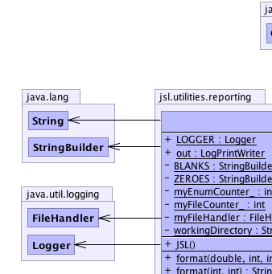
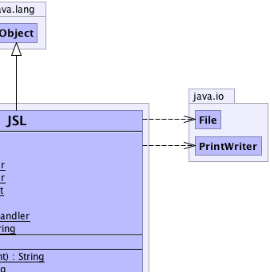
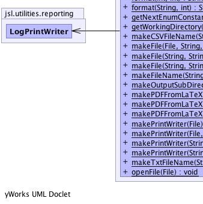
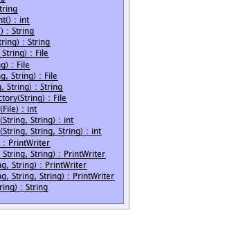

jsl.utilities.reporting.JSL
jsl.utilities.reporting.JSL
|
||||||||||
| PREV CLASS NEXT CLASS | FRAMES NO FRAMES | |||||||||
| SUMMARY: NESTED | FIELD | CONSTR | METHOD | DETAIL: FIELD | CONSTR | METHOD | |||||||||
java.lang.Object
public class JSL
|  |  |
|  |  |
| Field Summary | |
|---|---|
private static java.lang.StringBuilder |
BLANKS
|
static java.util.logging.Logger |
LOGGER
for logging |
private static int |
myEnumCounter_
Used to assign unique enum constants |
private static int |
myFileCounter_
|
private static java.util.logging.FileHandler |
myFileHandler
|
static LogPrintWriter |
out
Can be used like System.out, but instead writes to a file jslOutput.txt found in the jslOutput directory |
private static java.lang.String |
workingDirectory
|
private static java.lang.StringBuilder |
ZEROES
|
| Constructor Summary | |
|---|---|
JSL()
|
|
| Method Summary | |
|---|---|
static java.lang.String |
format(double val,
int n,
int w)
Converts a floating point value (val) to a string of given size (w) with a specified number (n) of decimals. |
static java.lang.String |
format(int val,
int w)
Converts an integer to a string with a given width |
static java.lang.String |
format(java.lang.String s,
int w)
Converts a string to a particular width |
static int |
getNextEnumConstant()
Should be used by subclasses to get the next observer constant so that unique constants can be used to represent observer states |
static java.lang.String |
getWorkingDirectory()
|
static java.lang.String |
makeCSVFileName(java.lang.String name)
Makes a String that has the form name.csv |
static java.io.File |
makeFile(java.io.File directory,
java.lang.String fileName,
java.lang.String ext)
Makes a File with the provided name and extension by interpreting the supplied File as a directory |
static java.io.File |
makeFile(java.lang.String fileName,
java.lang.String ext)
Makes a File in the jslOuput directory |
static java.io.File |
makeFile(java.lang.String directory,
java.lang.String fileName,
java.lang.String ext)
Makes a directory with the given name and a file with the extension in the directory |
static java.lang.String |
makeFileName(java.lang.String name,
java.lang.String ext)
Makes a String that has the form name.ext If an extension already exists it is replaced. |
static java.io.File |
makeOutputSubDirectory(java.lang.String directory)
Makes a sub-directory of jslOuput |
static int |
makePDFFromLaTeX(java.io.File file)
Creates a PDF representation of a LaTeX file within the with the given name. |
static int |
makePDFFromLaTeX(java.lang.String dirname,
java.lang.String filename)
Creates a PDF representation of a LaTeX file within the provided directory with the given name. |
static int |
makePDFFromLaTeX(java.lang.String pdfcmd,
java.lang.String dirname,
java.lang.String filename)
Creates a PDF representation of a LaTeX file within the provided directory with the given name. |
static java.io.PrintWriter |
makePrintWriter(java.io.File file)
Makes a PrintWriter from the given File IOExceptions are caught and logged |
static java.io.PrintWriter |
makePrintWriter(java.io.File directory,
java.lang.String fileName,
java.lang.String ext)
Creates a PrintWriter for use with a particular extension |
static java.io.PrintWriter |
makePrintWriter(java.lang.String fileName,
java.lang.String ext)
Creates a PrintWriter in the jslOutput directory for use with a particular extension |
static java.io.PrintWriter |
makePrintWriter(java.lang.String directory,
java.lang.String fileName,
java.lang.String ext)
Creates a PrintWriter for use with a particular extension |
static java.lang.String |
makeTxtFileName(java.lang.String name)
Makes a String that has the form name.txt |
static void |
openFile(java.io.File file)
Uses Desktop.getDesktop() to open the file |
| Methods inherited from class java.lang.Object |
|---|
clone, equals, finalize, getClass, hashCode, notify, notifyAll, toString, wait, wait, wait |
| Field Detail |
|---|
private static int myEnumCounter_
private static int myFileCounter_
public static final java.util.logging.Logger LOGGER
public static LogPrintWriter out
private static java.util.logging.FileHandler myFileHandler
private static java.lang.String workingDirectory
private static java.lang.StringBuilder ZEROES
private static java.lang.StringBuilder BLANKS
| Constructor Detail |
|---|
public JSL()
| Method Detail |
|---|
public static java.lang.String getWorkingDirectory()
public static int getNextEnumConstant()
public static java.lang.String format(int val,
int w)
val - w -
public static java.lang.String format(java.lang.String s,
int w)
s - Stringw - width
public static java.lang.String format(double val,
int n,
int w)
val - n - w -
public static java.io.PrintWriter makePrintWriter(java.lang.String fileName,
java.lang.String ext)
fileName - ext -
public static java.io.PrintWriter makePrintWriter(java.lang.String directory,
java.lang.String fileName,
java.lang.String ext)
directory - fileName - ext -
public static java.io.PrintWriter makePrintWriter(java.io.File directory,
java.lang.String fileName,
java.lang.String ext)
directory - fileName - ext -
public static java.io.PrintWriter makePrintWriter(java.io.File file)
file - May be null if an IOException occurred
public static java.io.File makeFile(java.lang.String fileName,
java.lang.String ext)
fileName - ext -
public static java.io.File makeFile(java.lang.String directory,
java.lang.String fileName,
java.lang.String ext)
directory - fileName - ext -
public static java.io.File makeFile(java.io.File directory,
java.lang.String fileName,
java.lang.String ext)
directory - fileName - ext -
public static java.io.File makeOutputSubDirectory(java.lang.String directory)
directory -
public static java.lang.String makeCSVFileName(java.lang.String name)
name -
public static java.lang.String makeTxtFileName(java.lang.String name)
name -
public static java.lang.String makeFileName(java.lang.String name,
java.lang.String ext)
name - ext -
public static void openFile(java.io.File file)
throws java.io.IOException
java.io.IOExceptionfile -
public static int makePDFFromLaTeX(java.lang.String dirname,
java.lang.String filename)
throws java.io.IOException,
java.lang.InterruptedException
java.io.IOException - if file does not exist or end with .tex
java.lang.InterruptedExceptiondirname - must not be nullfilename - must not be null, must have .tex extension
public static int makePDFFromLaTeX(java.lang.String pdfcmd,
java.lang.String dirname,
java.lang.String filename)
throws java.io.IOException,
java.lang.InterruptedException
java.io.IOException - if file does not exist or end with .tex
java.lang.InterruptedExceptionpdfcmd - the command for making the pdf within the OSdirname - must not be nullfilename - must not be null, must have .tex extension
public static int makePDFFromLaTeX(java.io.File file)
throws java.io.IOException,
java.lang.InterruptedException
java.io.IOException - if file does not exist or end with .tex
java.lang.InterruptedExceptionfile - must not be null, must have .tex extension
|
||||||||||
| PREV CLASS NEXT CLASS | FRAMES NO FRAMES | |||||||||
| SUMMARY: NESTED | FIELD | CONSTR | METHOD | DETAIL: FIELD | CONSTR | METHOD | |||||||||